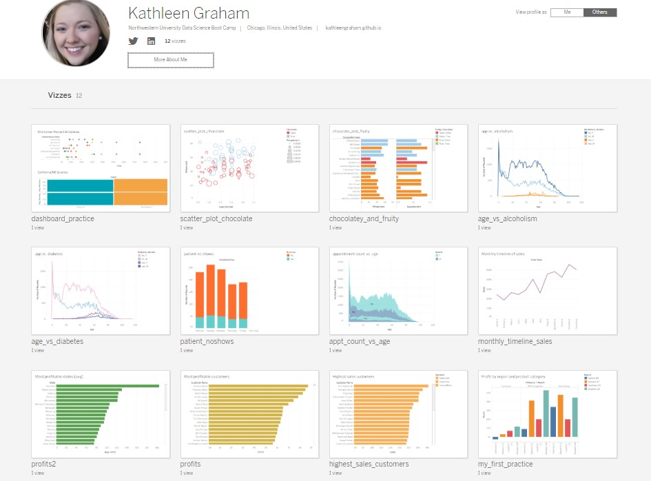

It's a dreary Saturday in Chicago, and we're getting closer and closer to the end of the boot camp. We have reached the week that a lot of people have been waiting for since the first day of class: Tableau Week!
Initially, I didn't know how to feel about Tableau because I had enjoyed figuring out all the tricky code with plotting in Matplotlib, D3.js, Plotly.js, Leaflet.js, and others. But now I get why everyone loves Tableau. I've already had so much fun playing around with different features!
I downloaded Tableau Public and made an account so that I could save my files. After just a few activities, I was getting used to a lot of the features, and I had a whole profile full of cool visualizations.

My favorite activity was analyzing candy. It seemed silly at first, but it showed how fast this particularly software can be for visualizing special cases quickly. Here are the steps I experimented with: